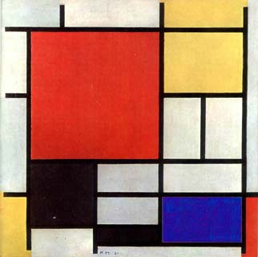

Líneas, geometría, colores, todo se mezcla en el imaginario de Piet Mondrian. La profundidad de las figuras toman protagonismo en una pieza que plantea la existencia de una mágica proporción en la mente de este artista.
Pieter Cornelius Mondrian nació en 1872 en Amersfoort, (Holanda). Su padre alentó mucho la vocación artística de Piet y era maestro de escuela y calvinista activo al que ayuda a pintar escenas históricas de intención moralizante. El estallido de la Primera Guerra Mundial le sorprende en Holanda, se ve obligado a distanciarse de París por lo tanto comienza a elaborar las bases de su obra madura; varios personajes influyen en este proceso. Uno es el teósofo y matemático Schoenmaekers, como la primacía de la ortogonalidad o el uso exclusivo de los tres colores primarios.como la primacía de la ortogonalidad o el uso exclusivo de los tres colores primarios.

 Qbita
Qbita